Physiology of Puberty & the Menstrual Cycle
- The axis is not switched on at puberty — it is switched back on. GnRH is active in fetal life and early infancy, then held down through childhood, then released. Puberty is the removal of a brake at least as much as the pressing of an accelerator.
- The brake is GABA; the accelerators are glutamate, kisspeptin and neurokinin B; leptin is permissive. Kisspeptin, acting on its receptor GPR54 on the GnRH neuron, is the essential final trigger — lose it and puberty never happens. The first sign of the switch is LH pulses at night.
- Menarche is not the first sign of puberty — it is one of the last. Thelarche (breast budding) comes first; menarche follows about two years later. And adrenarche is an adrenal event that runs independently of the gonads.
- The cycle turns on one switch: estradiol flips from negative to positive feedback. For most of the cycle it suppresses LH; once it stays high enough for long enough, it triggers the midcycle LH surge (a 10-fold rise) and ovulation follows about 36 hours later.
- Estradiol runs the first half, progesterone the second. The luteal phase is fixed at about 14 days; the follicular phase varies, and that is where all the variation in cycle length comes from.
- Dysmenorrhea is prostaglandins; NSAIDs treat it. Heavy bleeding responds to tranexamic acid. PMS and PMDD are defined by their timing — luteal-phase symptoms that resolve with menses.
Learning Objectives
Puberty (Watson)
- Describe how the hypothalamus and pituitary function from birth to puberty.
- Describe the androgenic and estrogenic physical changes of puberty, with their timelines.
- Identify a problem at each level of the HPO axis that can lead to abnormal pubertal development.
Puberty and menstruation (Lovett)
- Recall the main pubertal changes produced by estrogen and testosterone.
- Recall the phases of the menstrual cycle, and when estrogen and progesterone are each dominant.
- Summarize the changes in the endometrium through the cycle.
- List the mean ages of menarche and menopause.
- List the history questions to ask about the menstrual cycle, and the symptoms associated with menses.
- Define the normal blood loss in a cycle.
- Explain the physiology of premenstrual symptoms, and how NSAIDs and tranexamic acid treat menstrual symptoms.
Puberty
Behavioural, physiological and anatomical change as the gonads move from the juvenile to the adult condition — and the neural switch that sets it off.
What Puberty Is, and How You Know It Has Started
Puberty is the set of behavioural, physiologic and anatomic changes a child goes through as the gonads change from the juvenile to the adult condition. The obvious question is how you date it — and the answer is different in girls and boys.
| Marker | What it tells you | The catch |
|---|---|---|
| Menarche (girls) | A clear, datable sign that the change is underway — the ovary is now making enough estrogen and progesterone to build up the endometrium and then let it regress | It is not the start of puberty. And many early cycles are irregular and anovulatory, so full reproductive capacity cannot be assumed |
| Spermarche (boys) | The first appearance of sperm, in ejaculate or urine | No obvious counterpart to menarche. First ejaculation is hard to date precisely, and early ejaculates may be azoospermic |
| Adrenarche (both) | An adrenal event — rising adrenal androgens producing axillary and pubic hair | Independent of gonadal development and function. Its purpose is not known |
"Menarche is the first sign of puberty" — it is the opposite. The slide says menarche gives a clear sign that puberty is underway, which is true: it is unambiguous and easy to date. But it is one of the last events. In girls the first physical sign is thelarche (breast budding, typically 8–12 years), and menarche follows on average about 2.3 years later.
"Adrenarche is an adrenal event that results in gonadal development" — also reversed. The slide reads: "results in axillary and gonadal hair development; independent from gonadal development and function." "Gonadal hair" here means pubic hair. Adrenarche is the zona reticularis ramping up DHEA and DHEAS, usually starting around age 6–8, before the gonadal axis wakes up — and on its own clock. A child can have adrenarche without gonadarche, and vice versa.
The vocabulary
| Term | Definition |
|---|---|
| Gonadarche | Activation of the gonads by the pituitary hormones LH and FSH |
| Adrenarche | Increased production of androgens by the adrenal cortex |
| Thelarche | Appearance of breast tissue, secondary to ovarian estradiol |
| Pubarche | Appearance of pubic hair, secondary to adrenal androgens — along with the first axillary hair, apocrine body odour and acne |
| Menarche | The first menstrual bleed — mean age 12.7 |
| Spermarche | The first appearance of sperm, in ejaculate or urine |
Puberty generally follows an orderly sequence and the whole process takes 4–5 years. The lecture's thresholds for abnormal: before 7 (precocious) or after 16 (delayed). And after menarche the HPO axis stays immature for more than 2 years, so irregular cycling in that window is normal — more on why below.
What each hormone does
| Hormone | Pubertal changes it drives |
|---|---|
| Estradiol (ovary) | Breast development · growth acceleration · skeletal maturation (and ultimately closure of the growth plates) · endometrial proliferation · cervical mucus changes |
| Estradiol + progesterone | Menstruation — build-up, then regression, of the endometrium |
| Testosterone (testis) | Growth of the penis and testes · facial and body hair · deepening of the voice · increased muscle mass · the male growth spurt |
| Adrenal androgens (both sexes) | Pubic and axillary hair · apocrine body odour · acne |
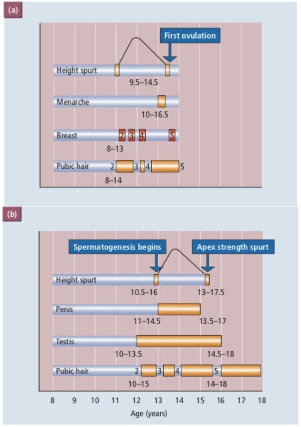
Growth
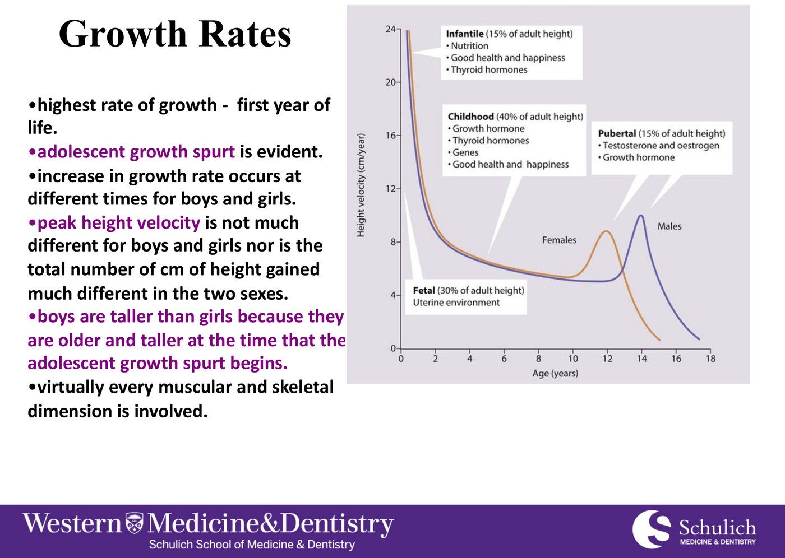
So why are boys taller? Because their spurt starts about two years later — they are older and already taller when it begins, having had two extra years of childhood growth. Virtually every muscular and skeletal dimension is involved in the spurt, not just height.
The Axis Across a Lifetime
This is the graph the rest of Part 1 explains. Read it from left to right.
![Graph of FSH and LH levels across a lifetime, from fetal life through infancy, childhood, puberty and the reproductive years to menopause. Both gonadotrophins rise in fetal life and again in infancy, fall to low levels through childhood, rise at puberty, cycle through the reproductive years, and rise to sustained high levels after menopause. Insets above show the pattern of LH secretion at each stage: low in childhood, pulsatile at puberty with more at night, cyclic in the reproductive years, and high after menopause.](../../../../assets/images/week-3/puberty-menstruation/gonadotrophins-lifetime.jpg)
Your notes say "this starts in pregnancy, but there are breaks on this cycle" — that is exactly right, and it is the key idea. The GnRH system is already running in the fetus and again in the first months after birth (sometimes called minipuberty). Then, shortly after birth, it is actively suppressed — and it stays suppressed until puberty. The GnRH neurons have not forgotten how to work. Something is holding them down.
The first thing that changes is the timing, not the amount
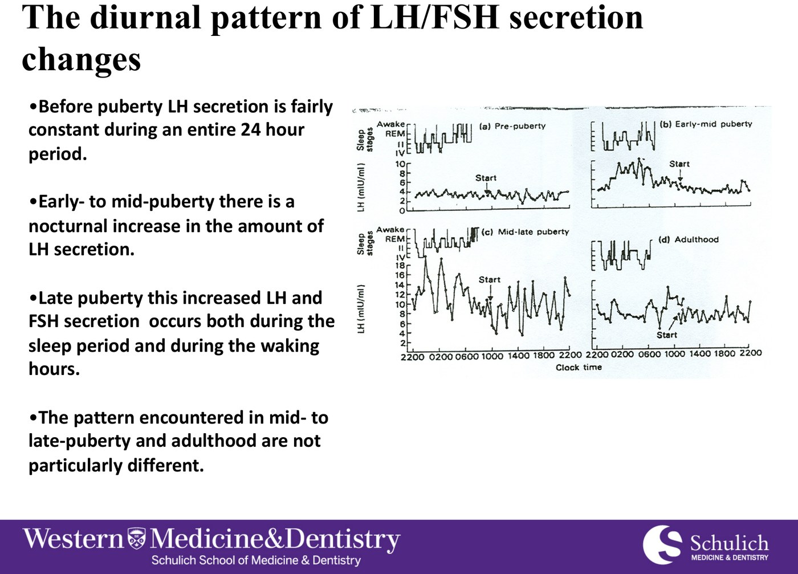
Before puberty LH is low and flat across the whole 24 hours. Early to mid-puberty: pulses appear at night, during sleep. Late puberty: pulses both asleep and awake — and from there the adult pattern is not much different.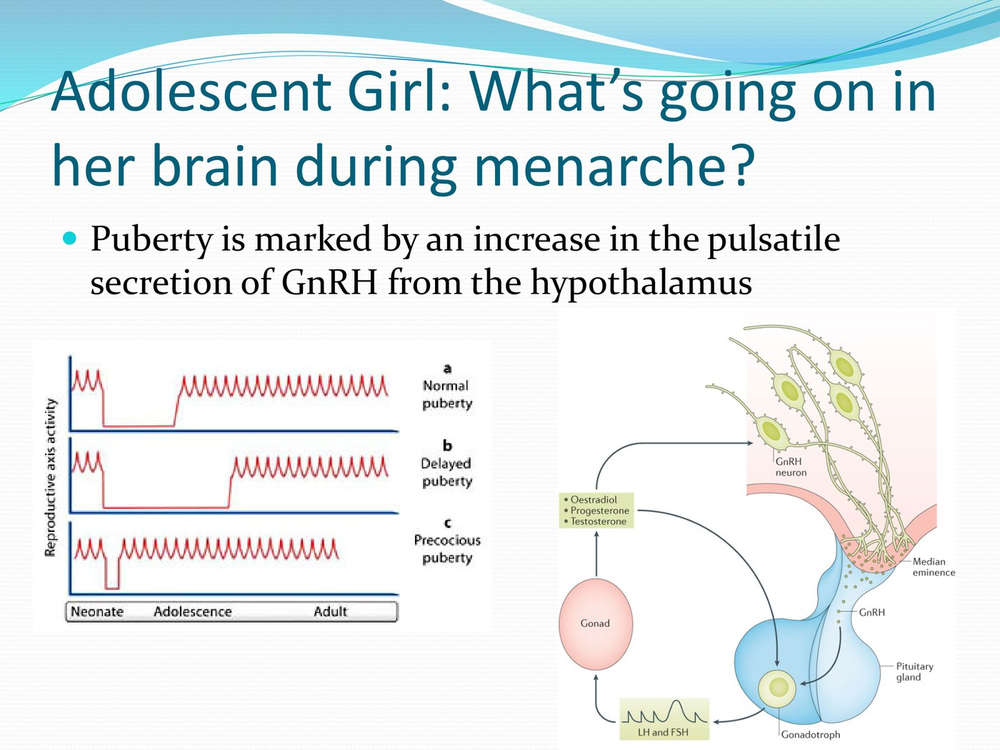
Puberty is marked by an increase in the pulsatile secretion of GnRH. Normal, delayed and precocious puberty differ only in when the pulsing restarts — the mechanism is the same.Why pulses rather than a steady level: the pituitary only responds to GnRH delivered in pulses — a continuous signal shuts it down. That is covered in detail, with a simulator, in 2.6, pulsatility.
The Switch: Brakes, Accelerators and Kisspeptin
This is the part your notes flagged as confusing, and it is confusing for a specific reason: the lecture presents the mechanism in the order it was discovered — GABA and glutamate (2001), then leptin, then kisspeptin (2003), then KNDy neurons (2017) — as if they were rival theories. They are not. They are layers of the same system, and they fit together into one sequence.
Who is pushing, and who is holding back
| Accelerators of GnRH | Brakes on GnRH |
|---|---|
| Kisspeptin — the essential final trigger, acting on GPR54 on the GnRH neuron | GABA — the main childhood brake |
| Glutamate — the main excitatory transmitter of the hypothalamus | Neuropeptide Y (NPY) |
| Neurokinin B — starts each pulse | Dynorphin — stops each pulse |
| Leptin — permissive: "there is enough fat stored to afford this" | Endogenous opioids |
Puberty could, in principle, start by adding activators or by removing inhibitors. It does both. Genetics set the timing: genetic factors account for an estimated 50–75% of the variation in normal pubertal timing.
The sequence, step by step
GnRH neurons are active, LH and FSH are up. Nothing is holding them down yet.
Shortly after birth, inhibitory GABA input to the GnRH (LHRH) neurons dominates the stimulatory glutamate input — with NPY adding to the inhibition. GnRH output falls and stays low for years. LH is low and flat, day and night.
GABA inhibition decreases and glutamate stimulation increases. But glutamate alone is not strong enough to overcome GABA — something has to tip the balance. Leptin is the permissive signal: it tells the hypothalamus there is enough stored energy to afford reproduction.
Kisspeptin neurons in the arcuate nucleus and the anteroventral periventricular nucleus (AVPV) synapse directly onto GnRH neurons in the preoptic area. Kisspeptin binds GPR54 on the GnRH neuron and makes it release GnRH into the portal blood. This is the step that is essential: inactivate GPR54 and the child never progresses through puberty.
The arcuate kisspeptin neurons co-express Kisspeptin, Neurokinin B and Dynorphin. Neurokinin B switches them on, dynorphin switches them off, and the alternation produces a rhythm — each burst of kisspeptin becomes one GnRH pulse, which becomes one LH pulse. First at night, then day and night.
Pulsing LH and FSH drive the ovary to make estradiol. But a monthly cycle needs one more thing — the ability of high estradiol to trigger a surge. That machinery matures after the pulse generator does, which is why cycles are irregular and often anovulatory for the first couple of years after menarche. This is the answer to "then comes the cyclic release of FSH and LH?" — see the table below.
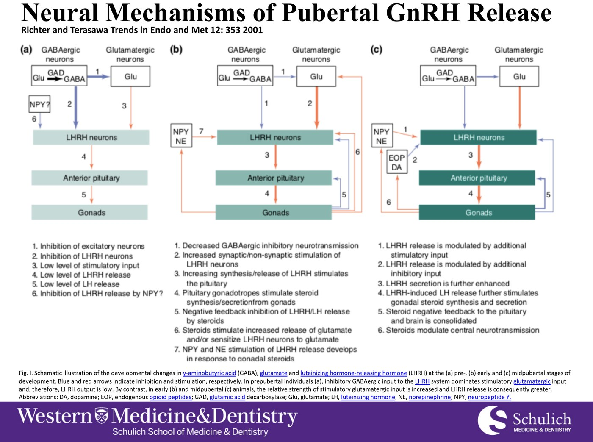
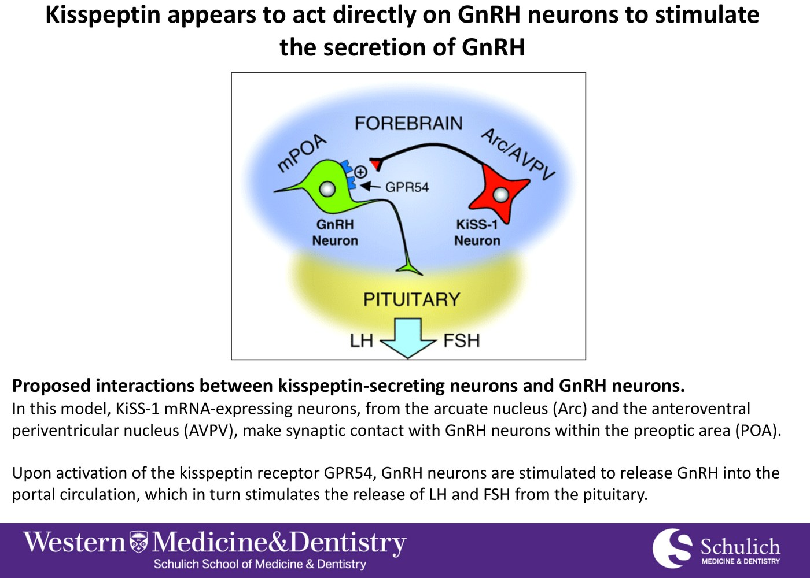
Step 4. The kisspeptin neuron (red, Arc/AVPV) makes the kisspeptin; the GnRH neuron (green, POA) carries the GPR54 receptor.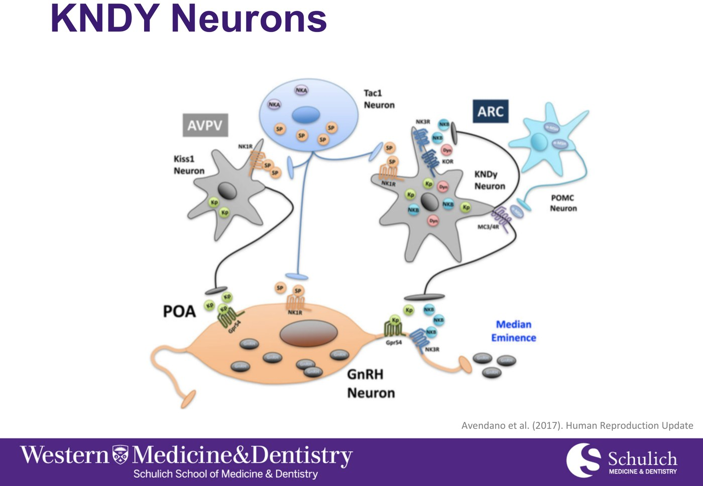
Step 5. KNDy neurons of the arcuate nucleus, the AVPV kisspeptin neurons, and where both reach the GnRH neuron. Avendano et al., Hum Reprod Update 2017, via the lecture.Your notes say the arcuate neurons "have the Kiss1 receptor on them." It is the other way round: the arcuate neurons make kisspeptin (they express the KISS1 gene); the GnRH neurons carry the receptor, GPR54 (now also called KISS1R).
The detail is worth getting right because it explains why kisspeptin neurons exist at all. GnRH neurons have essentially no estrogen receptor-α. They cannot sense the sex steroids that are supposed to feed back on them. The kisspeptin neurons do have ERα — so they are the relay that carries steroid feedback to the GnRH neuron. Every feedback loop in Part 2 runs through them. The molecular detail is in 2.6, kisspeptin.
Two kisspeptin systems: why pulsing becomes cycling
| Pulse generator | Surge generator | |
|---|---|---|
| Where | Arcuate nucleus — the KNDy neurons | AVPV (rostral periventricular area) |
| What it makes | The steady, rhythmic GnRH pulses that run all the time | The one-off midcycle surge that causes ovulation |
| How estradiol affects it | Negative feedback — estradiol turns it down | Positive feedback — sustained high estradiol turns it on |
| Present in | Both sexes | Much more developed in females — which is why men do not cycle |
| Switches on | At the start of puberty | Later — cycles in the first years after menarche are often anovulatory |
This two-generator model was worked out mostly in rodents; in humans the surge circuitry is less neatly localized, but the division of labour — pulses under negative feedback, a surge under positive feedback — holds. And a caveat on "the surge generator matures later": girls given enough estradiol before menarche can mount a surge, so the immaturity is spread across the whole axis, including an ovary that cannot yet hold estradiol high for long enough. Either way the practical result is the same: about half of cycles in the first years after menarche are anovulatory, and that is normal.
What Decides When: The Triggers
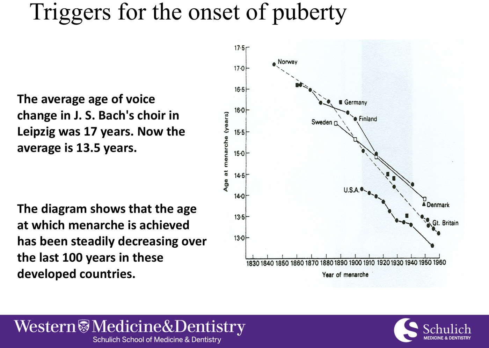
That is far too fast to be genetic. Something environmental moved, and the leading candidate is nutrition.
The critical metabolic mass hypothesis
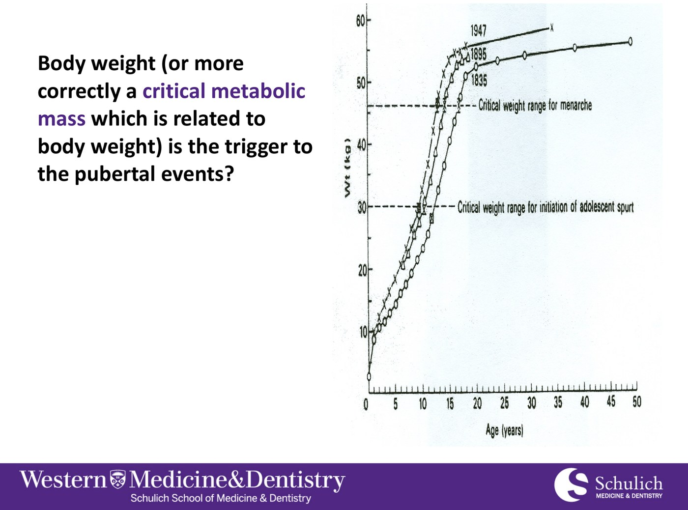
Each later cohort crosses the same weight band at a younger age. The weight at which the growth spurt starts, and at which menarche happens, stays constant — the age does not.- The weight range at which the growth spurt begins and menarche occurs is constant.
- So perhaps a critical metabolic mass must be reached before the axis can activate.
- That would explain the trend: better nutrition, health care and living conditions mean the weight is reached earlier.
- It fits the extremes: moderately obese girls have an early menarche; malnutrition delays it.
- But it is controversial. It assumes weight causes puberty, and in practice you cannot predict one girl's menarche from her weight.
The leptin hypothesis — the mechanism behind the weight
If weight matters, the brain needs a way to measure it. Leptin is a peptide made by adipose tissue and secreted into the circulation in proportion to fat mass — exactly the right signal.
- Glutamate drives GnRH but cannot, on its own, overcome the GABA brake. Leptin is proposed as the permissive signal that lets it.
- Evidence: giving leptin to prepubertal rats and mice advances puberty; mice that cannot make leptin never cycle and are sterile.
- Permissive, not the trigger. Leptin is necessary — you need enough of it — but it does not set the timing on its own. Its role is still debated.
They are not competing explanations. Critical mass is the observation; leptin is how fat mass is reported to the brain; kisspeptin is where that report is acted on. That is also why anorexia nervosa and intense athletic training delay puberty or stop periods: too little fat, too little leptin, and the hypothalamus decides reproduction is unaffordable.
When It Goes Wrong: A Problem at Each Level
Precocious puberty is the axis activating too early; delayed puberty is it staying suppressed too long. Both can arise at any level of the axis — which is exactly the lecture's third objective.
![Diagram of the hypothalamic-pituitary-gonadal axis with disorders of pubertal timing mapped to each level. Timing inputs at the top include nutrition, energy metabolism, stress, caloric reserves, metabolic fuels, season, phytoestrogens and endocrine disruptors. Precocious causes on the left: female to male ratio 10 to 1, 66 percent idiopathic in girls, McCune-Albright syndrome at the gonad, and premature thelarche at 1 in 5000. Delayed or absent causes on the right: anorexia and bulimia, leptin and leptin receptor gene disorders, GPR54 mutations, idiopathic hypogonadotropic hypogonadism, Kallmann syndrome, GnRH receptor inactivating mutation, degenerate gonadotroph, LH beta and FSH beta mutations, FSH receptor mutation, hypergonadotropic hypogonadism, Turner syndrome and Klinefelter syndrome.](../../../../assets/images/week-3/puberty-menstruation/puberty-disorders-by-level.jpg)
| Level | Early (precocious) | Late or absent (delayed) |
|---|---|---|
| Timing inputs / hypothalamus | Idiopathic in about two-thirds of girls; girls outnumber boys 10 : 1 | Anorexia / bulimia (F > M) · leptin or leptin-receptor gene disorders · GPR54 mutations · idiopathic hypogonadotropic hypogonadism · Kallmann syndrome (KAL1, KAL2; M 1:7,500, F 1:50,000) |
| Pituitary | — | GnRH receptor inactivating mutation · degenerate gonadotroph (SF-1, DAX) · LHβ or FSHβ mutation |
| Gonad | McCune–Albright (activating G-protein — LH-receptor signalling switched on without LH) · premature thelarche (1:5,000) | FSH receptor mutation · hypergonadotropic hypogonadism · Turner syndrome (45,X; 1:2,500) · Klinefelter syndrome (47,XXY; 1:500) |
| Hormone action | — | Androgen receptor defects · 5α-reductase deficiency |
Delayed puberty splits cleanly on the gonadotrophins. Low or inappropriately normal LH/FSH means the problem is above the gonad — hypothalamus or pituitary (hypogonadotropic). High LH/FSH means the gonad has failed and the pituitary is shouting at it (hypergonadotropic — Turner, Klinefelter).
It is the same rule as in the pituitary lecture: a low target hormone with an unraised trophic hormone points upstream. Kallmann syndrome is the classic hypogonadotropic cause: GnRH neurons are born in the olfactory placode and fail to migrate into the hypothalamus — so the patient also has anosmia.
Hormones build the reproductive tract as well as change it
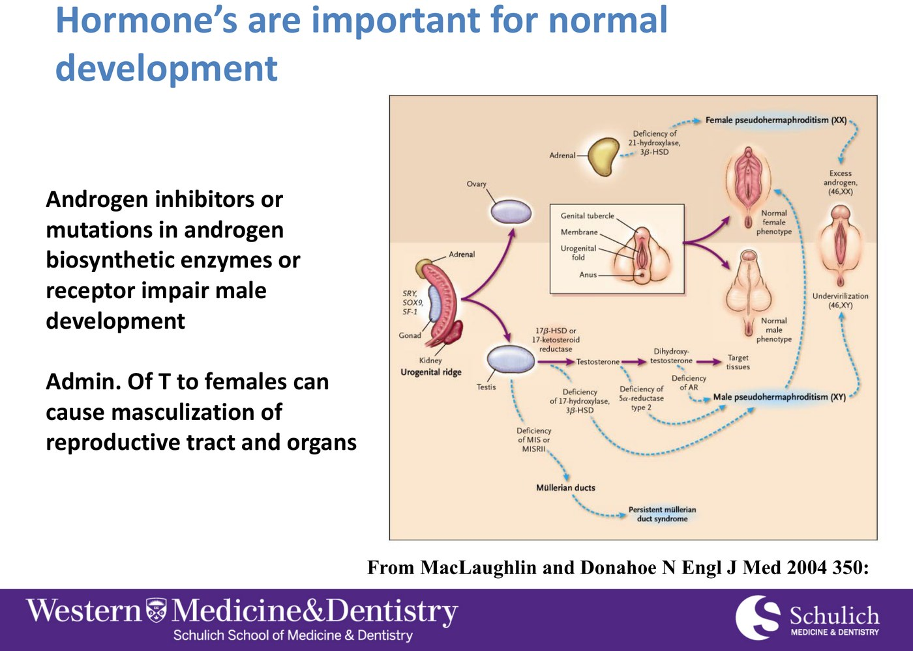
| Defect | What goes wrong | Result in a 46,XY individual |
|---|---|---|
| Androgen receptor defect (androgen insensitivity) | Testosterone is made normally but cannot act | Complete form: female external phenotype with internal testes and no uterus — often found at puberty as primary amenorrhea |
| 5α-reductase deficiency | Testosterone cannot be converted to DHT, the androgen that builds the external genitalia and prostate | Under-virilized external genitalia at birth, then marked virilization at puberty, when the testosterone surge is large enough to act directly |
The HPO Axis and the Menstrual Cycle
What the switched-on axis does every month, once the surge generator has matured — brain, pituitary, ovary and uterus, in order.
The Ovary's Supply, and How the Axis Talks to It
Every egg she will ever have is made before birth
Oogenesis begins in fetal life, when primordial germ cells migrate to the genital ridge. Just before birth, 2–4 million primary oocytes enter meiosis and arrest in prophase I (the diplotene stage). They stay there — quiescent, or dying by atresia — until puberty.
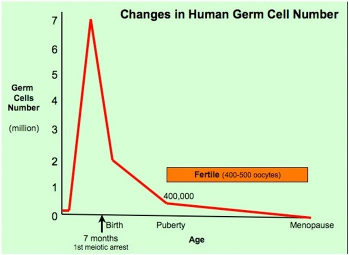
One correction: your notes, and the slide text, say she has the most oocytes at birth. The slide's own graph shows the peak comes before birth, in mid-gestation; birth is simply the highest number she has after being born. The supply only ever falls from there — which is why menopause arrives when it does.
The feedback loops
![Diagram of the hypothalamic-pituitary-ovarian axis. The hypothalamus releases GnRH to the pituitary gonadotroph cell, which releases FSH and LH. LH acts on theca cells to produce androgens; FSH acts on granulosa cells, where aromatase converts androgens to estrogens. Estrogens feed back with both negative and positive signs on the pituitary and hypothalamus; progesterone from the corpus luteum and inhibin from granulosa cells feed back negatively. A box lists the effects of estradiol — breast development, growth acceleration and skeletal maturation — and of estradiol plus progesterone — menstruation.](../../../../assets/images/week-3/puberty-menstruation/hpo-feedback.jpg)
| Signal | From | Effect |
|---|---|---|
| Estradiol | Granulosa cells of growing follicles | Negative feedback on LH and FSH for most of the cycle → positive feedback at midcycle (the surge) |
| Progesterone | Corpus luteum | Slows GnRH/LH pulse frequency; prevents a second surge |
| Inhibin (B follicular, A luteal) | Granulosa cells, corpus luteum | Suppresses FSH selectively — not LH |
| Activin | Pituitary and ovary | Stimulates FSH — inhibin's opposite |
Your notes had "inhibin and activin stimulate/suppress FSH" — to pin the direction: inhibin inhibits, activin activates. The names give it away. And "gonadotropins in females are regulated by oocytes" is close: they are regulated by the follicles around the oocytes, whose granulosa cells make the estradiol and inhibin. Run out of follicles and nothing is left to feed back — FSH climbs, which is the biochemistry of menopause.
What FSH and LH each do in the ovary
| FSH — acts on granulosa cells | LH — acts on theca cells (and later granulosa) |
|---|---|
| A small rise at the start of each cycle recruits a cohort of follicles | Drives theca cells to make androgens — the raw material for estradiol |
| Makes granulosa cells proliferate — they hypertrophy and divide | The midcycle surge completes meiosis I in the oocyte |
| Switches on aromatase, converting androgen to estradiol | Triggers ovulation about 36 hours after the surge |
| Stimulates inhibin production | Luteinizes the granulosa cells so they make progesterone |
| In the dominant follicle, induces LH receptors on the granulosa cells, and local growth factors such as IGF-1 | Sustains the corpus luteum through the luteal phase |
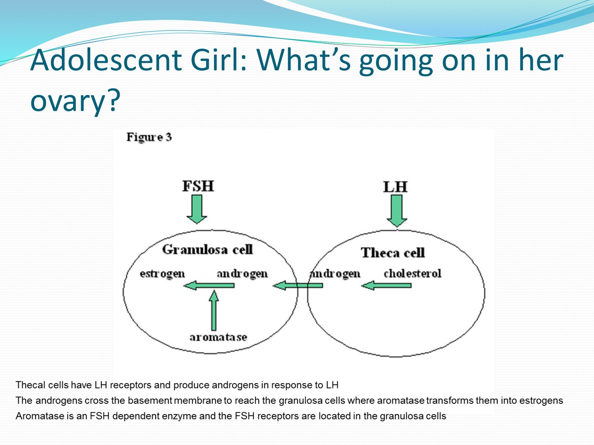
Several follicles start growing together. As they grow they make estradiol and inhibin — which push FSH down. Now there is less FSH to go around, and only the follicle with the most FSH receptors can keep growing on the falling supply. That one becomes dominant; the rest undergo atresia.
The dominant follicle then protects itself further: FSH induces LH receptors on its granulosa cells, so it can keep going on LH as FSH falls away. The follicle selects itself by starving its competitors.
The Cycle, Phase by Phase
This is the graph to know. Every line on it follows from the feedback table above.
![Composite diagram of the 28-day menstrual cycle with ovulation at day 14. From top: the ovarian cycle, from growing follicle through ovulation to corpus luteum and corpus albicans; basal body temperature, rising about half a degree after ovulation; anterior pituitary hormones, with a sharp LH surge and a smaller FSH peak at midcycle; ovarian hormones, with estradiol rising to a peak just before ovulation and then a second smaller rise, and progesterone rising after ovulation to a mid-luteal peak; and the uterine cycle, with menses, then endometrial thickening through the follicular phase and further gland development through the luteal phase.](../../../../assets/images/week-3/puberty-menstruation/menstrual-cycle-composite.jpg)
| Phase | Brain and pituitary | Ovary | Dominant hormone | Endometrium |
|---|---|---|---|---|
| Early follicular menses, days 1–5 |
FSH rises a little, freed from the previous cycle's luteal suppression | A new cohort of follicles is recruited | All low | Functional layer shed; basal layer stays |
| Mid–late follicular days 6–13 |
Estradiol and inhibin suppress FSH (negative feedback) | Dominant follicle selected; the rest undergo atresia. Estradiol and inhibin A rise daily | Estradiol | Proliferative — thickening; cervical mucus becomes abundant and stretchy |
| Ovulation about day 14 |
Estradiol peaks a day before and flips to positive feedback → LH surges 10-fold, FSH rises less | Oocyte completes meiosis I; released about 36 h after the surge. Granulosa cells begin making progesterone even before release | LH surge | — |
| Luteal days 15–28 |
Progesterone slows LH pulses; inhibin A holds FSH down | Corpus luteum makes progesterone, estradiol and inhibin A (which peaks mid-luteal) | Progesterone | Secretory — mitoses stop, glands "organize"; body temperature rises |
| No implantation | As the corpus luteum fails, suppression lifts and FSH starts to rise — the next cycle's recruitment begins | Corpus luteum regresses to a corpus albicans | Estradiol and progesterone fall | Functional layer sloughs — menses |
Your notes say the surge is "a positive feedback of FSH and LH." More precisely: it is estradiol whose feedback flips. For most of the cycle estradiol suppresses LH. But once it is high enough, for long enough — which only a mature dominant follicle can produce — the same hormone stimulates it. The result is a roughly 10-fold rise in LH and a smaller rise in FSH.
That is why the surge only happens once per cycle, and only when a follicle is ready: the follicle itself sets it off by making the estradiol. It is a timing signal the ovary sends to the brain saying "this egg is ready."
"It ovulates, then turns into corpus luteum, and produces estrogen." The corpus luteum does make some estrogen, but its signature hormone is progesterone — that is the whole point of the luteal phase.
"It causes the thickness of the endometrium to increase." Thickening is estradiol's job, in the follicular phase. Progesterone does something different in the luteal phase: it stops the proliferation and converts the thickened lining into a secretory, receptive one. Histology of the two phases is in 2.7, the endometrium through the cycle.
Menstruation: Normal, and What Goes Wrong
If an embryo fails to implant, the corpus luteum degenerates into a corpus albicans, estradiol and progesterone fall, and the functional layer of the endometrium sloughs along with the unfertilized ovum and menstrual blood. The basal layer stays intact, so the functional layer can regenerate next cycle.
What is normal
| Parameter | Normal |
|---|---|
| Cycle length | 21–35 days — only 15% of women actually have a 28-day cycle |
| Duration of menses | 3–10 days (mean 5.2) |
| Blood loss | Up to 80 mL per cycle |
| Menarche | Mean age 12.7 |
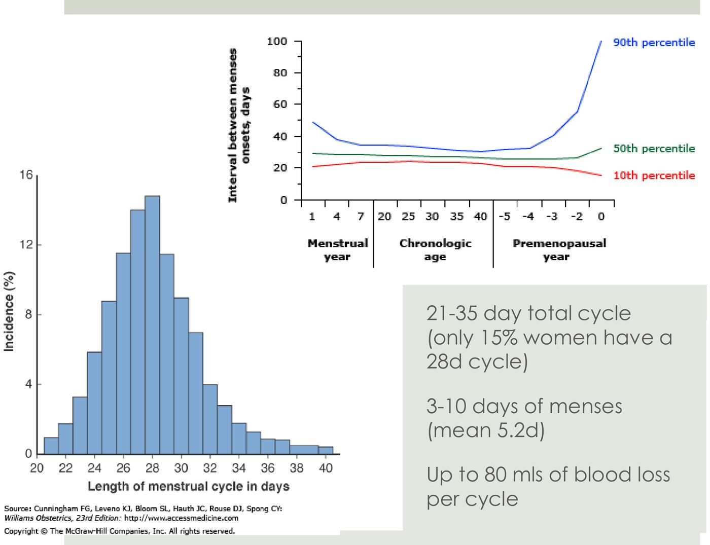
The luteal phase is fixed — the interval from ovulation to menstruation stays constant at about 14 days, because the corpus luteum has a fixed lifespan. The follicular phase varies, and that variation is primarily genetic.
So a 35-day cycle is a 21-day follicular phase plus a 14-day luteal phase; a 24-day cycle is a 10-day follicular phase plus the same 14. Practically: ovulation happens about 14 days before the next period, not 14 days after the last one.
Taking a menstrual history
| Ask about | Why |
|---|---|
| First day of the last menstrual period | Dating, and the possibility of pregnancy |
| Age at menarche | Early or delayed puberty; years since the axis matured |
| Cycle length and regularity | 21–35 days is normal; irregular cycles suggest anovulation |
| Duration and heaviness — products used, how often changed, clots, flooding, night-time changes | Heavy menstrual bleeding is quantified by its impact, not by measuring blood |
| Bleeding between periods or after intercourse | Suggests a structural or cervical cause rather than a hormonal one |
| Pain — timing, severity, time off school or work | Primary versus secondary dysmenorrhea |
| Premenstrual symptoms | PMS / PMDD — see below |
| Contraception and sexual history | Hormonal contraception changes every other answer on this list |
The deck lists these as an objective without giving the list on a slide; this is a standard menstrual history, added so the objective is covered.
Dysmenorrhea: why periods hurt
At the start of menses, prostaglandins from the shedding lining drive strong uterine contractions.
Far higher than arterial pressure.
Anaerobic metabolites accumulate.
The result is dysmenorrhea — essentially cramping angina of the uterus.
Treating the symptoms
| Drug | Use | How it works |
|---|---|---|
| NSAIDs | Menstrual cramps (dysmenorrhea) | Block cyclo-oxygenase, so less prostaglandin is made — which cuts off step 1 of the chain above. Fewer contractions, less ischemia, less pain. They also reduce blood loss |
| Tranexamic acid (TXA) | Heavy ovulatory bleeding | A synthetic lysine derivative and antifibrinolytic: it blocks plasminogen from binding fibrin, so clots in the endometrium are not broken down as fast. Taken only during menses |
Premenstrual Symptoms: PMS and PMDD
| PMS | PMDD | |
|---|---|---|
| What it is | Recurrent, moderate to severe affective, physical and behavioural symptoms | The severe, disabling end — affects relationships and ability to work |
| Timing | Develop in the luteal phase and resolve within a few days of menstruation | |
| How common | 30–40% of women | 3–8% |
| Affective and behavioural symptoms | Physical symptoms |
|---|---|
| Irritability, mood swings, anger · depression and anxiety · social withdrawal · poor concentration · crying spells · changes in sexual desire · altered sleep | Breast tenderness · bloating, gas, abdominal pain · swelling of hands and feet · headache · fatigue · food cravings · acne |
What makes it PMS or PMDD is not which symptoms occur but when: luteal phase on, resolving shortly after menses begins, with a symptom-free stretch after menstruation. That symptom-free week is what separates premenstrual disorders from depression or anxiety that simply gets worse before a period. It is why diagnosis relies on the patient charting symptoms prospectively across at least two cycles, rather than recalling them.
- Cause is largely unknown. The leading idea is an enhanced responsiveness to normal fluctuations of estrogen and progesterone — the hormone levels are normal; the brain's reaction to them is not.
- Serotonin and GABA signalling are both implicated in the altered central neurotransmission.
- Treatment: suppress ovulation (the combined oral contraceptive — no cycle, no luteal phase), SSRIs, and light therapy. PMDD may respond to the same.
Menopause: The End of the Line
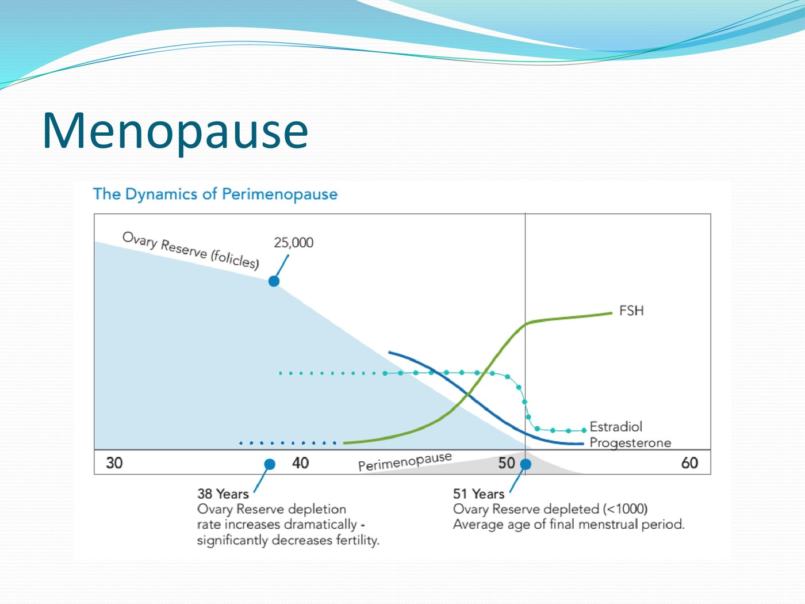
| Feature | Detail |
|---|---|
| Definition | 12 consecutive months of amenorrhea, and/or FSH consistently above 30 |
| Average age | The slide text says 53 for North American women; the deck's own figure above marks 51 as the average final menstrual period, which matches most published figures |
| Timing is predetermined | Set by the number of follicles at birth — and genetic: women tend to go through menopause around the same age as their mothers |
| Mechanism | Ovarian follicles depleted → estradiol and progesterone decline → FSH rises as the pituitary is "screaming" at the ovaries |
Menopause is the textbook primary (hypergonadotropic) hypogonadism: the gonad has failed, so the trophic hormone is high. Contrast the pituitary case in 3.2, where the testosterone was just as low but the gonadotrophins were not raised — secondary hypogonadism. Same low sex steroid; the FSH tells you which end of the axis failed.
Why this framework matters
The HPO axis is a complex interplay of stimulation and inhibition by circulating hormones — but understanding the basic framework is what lets you treat the common disorders (dysmenorrhea, heavy bleeding, oligomenorrhea) and provide effective contraception, which works by exploiting exactly the negative feedback described above.
Built from two decks delivered as one lecture: Dr. Andrew J. Watson's "HPO Control of Puberty" and Dr. Erin Lovett's puberty and menstruation slides. All figures are taken from those decks with their original credits kept in the captions (Richter and Terasawa, Trends Endocrinol Metab 2001; Avendano et al., Hum Reprod Update 2017; MacLaughlin and Donahoe, N Engl J Med 2004; Cunningham et al., Williams Obstetrics); photographs have been cropped out or left out, keeping only the graphs and diagrams. Added from outside the decks and verified against published sources: the division between the arcuate pulse generator and the AVPV surge generator, the absence of estrogen receptor-α on GnRH neurons, and the finding that about half of cycles in the first years after menarche are anovulatory (StatPearls, Physiology, Menarche; Rovner et al., Reprod Sci 2018); that thelarche is the first physical sign of female puberty, with menarche about 2.3 years later, and that adrenarche usually begins at 6–8 years, before gonadarche; that peak oocyte number falls before birth, as the deck's own graph shows; and the mechanisms of NSAIDs and tranexamic acid. The menstrual history table is a standard history added to cover a stated objective the deck does not list. The GnRH pulse mechanism, kisspeptin signalling and the two-cell model are covered in more depth in 2.6; endometrial and ovarian histology in 2.7.